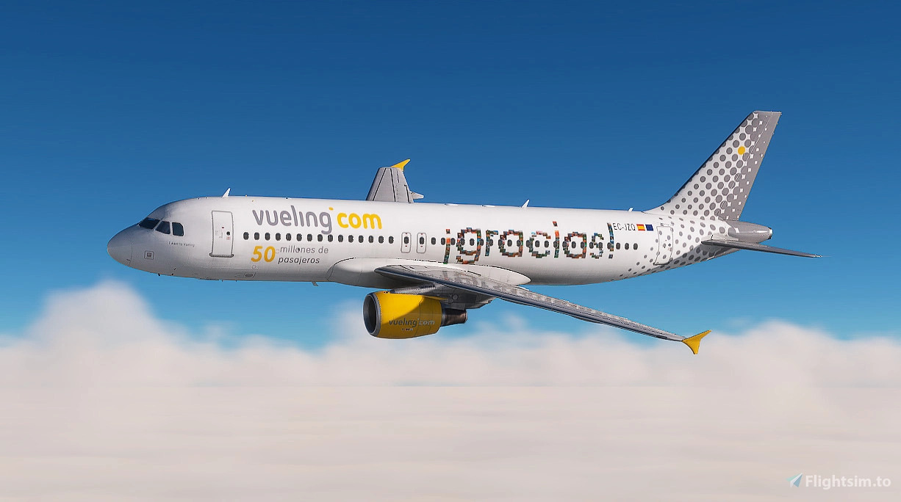

NUEVO

Vueling EC-LUO
Athletic Club Livery especial que rinde homenaje al Athletic Club de Bilbao. Luce los colores rojo y blanco del equipo, junto con su escudo, en una combinación única que destaca en el cielo DESCARGAR

Vueling EC-JZQ
“Gracias” Edition Diseño con el mensaje “gracias” en el fuselaje, acompañado del branding de Vueling.com.. Un repintado sencillo pero emotivo, ideal para vuelos con un toque de gratitud DESCARGAR
Vueling EC-MAH
Tributo a Toni Rubio, rinde homenaje al comandante Toni Rubio con la inscripción: “Comandante Toni Rubio, volaremos siempre juntos”. Un emotivo recuerdo que acompaña cada vuelo por los cielos europeos DESCARGAR
Vueling EC-MAO
Tributo a Toni Rubio, rinde homenaje al comandante Toni Rubio con la inscripción: “Comandante Toni Rubio, volaremos siempre juntos”. Un emotivo recuerdo que acompaña cada vuelo por los cielos europeos DESCARGAR
Vueling EC-MLD
Tributo a Toni Rubio, rinde homenaje al comandante Toni Rubio con la inscripción: “Comandante Toni Rubio, volaremos siempre juntos”. Un emotivo recuerdo que acompaña cada vuelo por los cielos europeos DESCARGAR
Vueling EC-MOO
Tributo a Toni Rubio, rinde homenaje al comandante Toni Rubio con la inscripción: “Comandante Toni Rubio, volaremos siempre juntos”. Un emotivo recuerdo que acompaña cada vuelo por los cielos europeos DESCARGAR
Vueling EC-NLX
Tributo a Toni Rubio, rinde homenaje al comandante Toni Rubio con la inscripción: “Comandante Toni Rubio, volaremos siempre juntos”. Un emotivo recuerdo que acompaña cada vuelo por los cielos europeos DESCARGAR
Jet2.com ES-SAP
Tributo a Toni Rubio, rinde homenaje al comandante Toni Rubio con la inscripción: “Comandante Toni Rubio, volaremos siempre juntos”. Un emotivo recuerdo que acompaña cada vuelo por los cielos europeos DESCARGAR